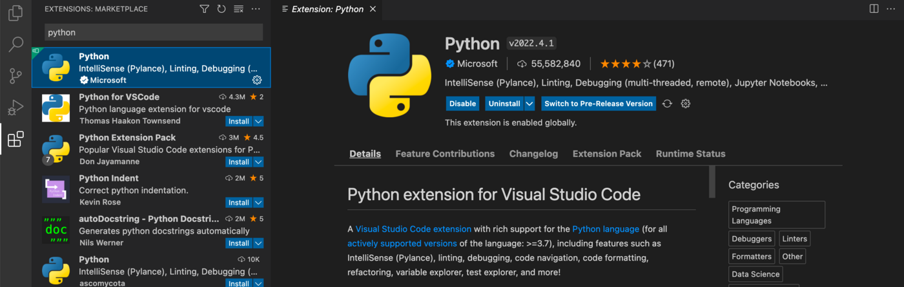
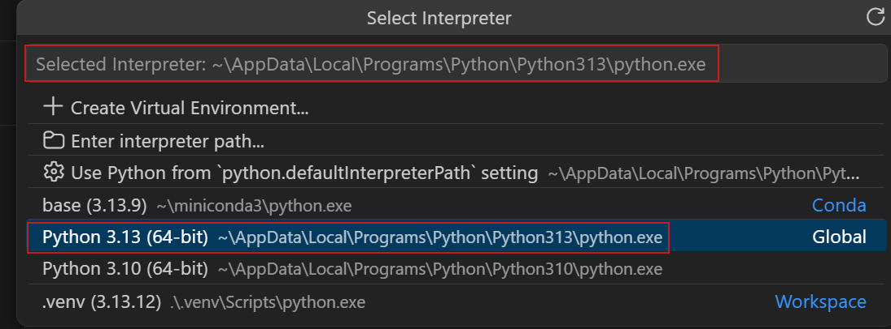

Python et environnement conda#
La configuration se fait une fois par poste et par compte, dans cet ordre, avec VS Code ouvert sur le dossier du TD (VS Code) :
Installer l’extension Python, avec une connexion internet.
Choisir l’interpréteur : le
python.exed’Anaconda.Faire de Git Bash le terminal de VS Code, avec conda activé.
Lancer un programme pour vérifier.
Les versions vérifiées sont en fin de page.
Installer l’extension Python#
Ouvrir le panneau Extensions :
Ctrl+Maj+X, ou le bouton à quatre carrés dans la barre de gauche.Taper
pythondans la zone de recherche.Choisir « Python », de Microsoft : le nom de l’éditeur est écrit sous celui de l’extension, avec une coche bleue.
Cliquer sur Install. Python, Pylance et Python Debugger apparaissent ensuite comme installées. Sinon : V3.


Le panneau Extensions après avoir tapé python ; ici l’extension est déjà
installée, d’où les boutons Disable et Uninstall à la place d’Install
(documentation VS Code, CC BY 3.0 US).#
Plusieurs extensions s’appellent « Python », et certaines ne viennent pas de
Microsoft : lire le nom de l’éditeur avant d’installer. Sur la page de
l’extension, la ligne « Identifier » donne ms-python.python.
Choisir l’interpréteur#
L’interpréteur est le Python que VS Code emploie pour exécuter les fichiers
.py.
Ouvrir un fichier
.pydu TD.Palette, « Python: Select Interpreter ». Une liste apparaît, avec pour chaque Python trouvé son nom, son chemin, et son type : Conda pour un environnement conda, Global pour un Python installé seul.
Choisir la ligne
basedont le chemin contientanaconda3. Si la liste ne montre pasbase: V6.


La liste « Python: Select Interpreter », sur un autre poste : base y est dans
miniconda3, et le cadre rouge marque le Python déjà choisi. Sur les postes de
la salle, la ligne base porte le chemin C:\ProgramData\anaconda3\python.exe
(documentation VS Code, CC BY 3.0 US).#
Le nom choisi s’affiche en bas à droite de la fenêtre, et il est mémorisé
pour ce dossier, à part des fichiers settings.json, dans User\workspaceStorage.
Dans un dossier ouvert ensuite, le réglage python.defaultInterpreterPath du
compte désigne base (Fichiers de réglages).

L’interpréteur choisi, en bas à droite de la fenêtre (documentation VS Code, CC BY 3.0 US).#
Quand un TD a créé son propre environnement (Anaconda), le choisir ici, par son nom. VS Code crée aussi un environnement conda par la commande « Python: Create Environment ». Comment VS Code gère les environnements décrit ce qu’elle lance, et pourquoi le module passe par l’invite de commandes d’Anaconda.
Régler le terminal#
Par défaut, le terminal de VS Code est un PowerShell, qui refuse le script d’activation d’Anaconda tant que le compte n’a pas changé sa stratégie (A7). Le module emploie Git Bash, le terminal du cours 1 (Git et Git Bash).
Palette, « Terminal: Select Default Profile », puis « Git Bash » (s’il est absent : V12). Ce choix est écrit dans les réglages du compte (VS Code, section Les réglages) :
"terminal.integrated.defaultProfile.windows": "Git Bash"
Le fichier complet est dans Fichiers de réglages. Le
terminal de VS Code lit le même ~/.bash_profile que la fenêtre Git Bash, où
conda init bash a écrit (Anaconda, section conda dans un terminal) : l’invite commence donc par (base).
Vérifier#
Menu Terminal, New Terminal. L’invite commence par
(base)et se termine par$. Sans(base): A3. Si une erreur s’affiche : V5.Dans ce terminal, taper
python -c "import sys; print(sys.executable)". Le chemin d’Anaconda s’affiche. Sinon : A16.Ouvrir un fichier
.py, puis cliquer sur le triangle en haut à droite. Le terminal affiche ce que le programme écrit. Sinon : V8.
Le chemin affiché dans le terminal doit être celui de l’interpréteur choisi. Si
un import échoue alors que le paquet est installé, ces deux Python diffèrent
souvent (V8).
Secours : l’invite de commandes d’Anaconda#
Quand le réglage de conda échoue dans Git Bash, le terminal de secours est un
cmd (Les terminaux), celui de l’invite de
commandes d’Anaconda. Ce profil active base à l’ouverture, sans dépendre de
l’extension Python.
Palette, « Preferences: Open User Settings (JSON) ».
Ajouter ces lignes entre les deux accolades du fichier, après une virgule s’il y a déjà quelque chose :
"terminal.integrated.profiles.windows": { "Anaconda Prompt": { "path": "C:\\Windows\\System32\\cmd.exe", "args": ["/K", "C:\\ProgramData\\anaconda3\\Scripts\\activate.bat", "C:\\ProgramData\\anaconda3"] } }, "terminal.integrated.defaultProfile.windows": "Anaconda Prompt"
Enregistrer (
Ctrl+S).Menu Terminal, New Terminal. L’onglet s’appelle « Anaconda Prompt », et l’invite commence par
(base). Si rien ne change : palette, « Developer: Reload Window ». Si le terminal affiche une erreur : V5.
L’extension y tape tout de même sa commande d’activation, dans un terminal déjà activé, pour l’environnement choisi comme interpréteur.
Note
Les deux chemins C:\ProgramData\anaconda3 sont ceux de l’installation
de la salle. Pour les lire sur un poste : menu Démarrer, clic droit sur
« Anaconda Prompt », Ouvrir l’emplacement du fichier, puis clic droit sur
le raccourci, Propriétés, champ Cible. Il contient
%windir%\System32\cmd.exe "/K" C:\ProgramData\anaconda3\Scripts\activate.bat C:\ProgramData\anaconda3 :
les deux chemins du réglage sont les deux derniers, dans le même ordre.
Versions#
Les noms de commandes et de réglages de cette page ont été vérifiés avec VS Code 1.137 et l’extension Python 2026.4 (septembre 2026). Ils sont les mêmes depuis VS Code 1.56 (mai 2021, arrivée des profils de terminal) et l’extension Python de 2021 ; sur une version plus ancienne, les noms peuvent différer.
L’extension Python Environments est installée d’office, comme dépendance, et gère les environnements sans réglage (Comment VS Code gère les environnements).
Source des captures d’écran#
Les captures de cette page viennent de la documentation de Visual Studio Code (Microsoft), publiée sous licence Creative Commons Attribution 3.0 US.